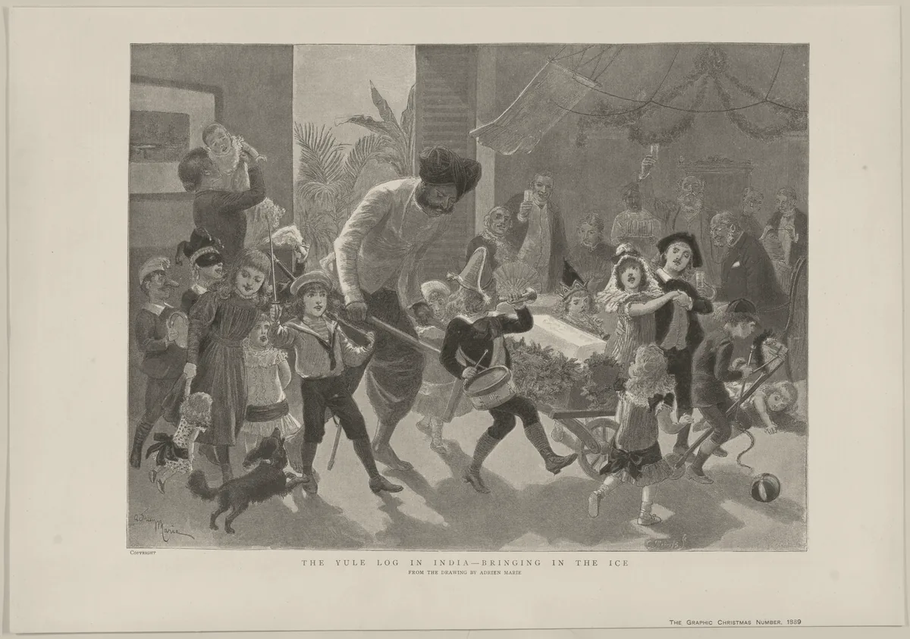

· Edición 74 · 4 min de lectura
La capa de ozono se recupera gracias a un tratado de 1987

La capa de ozono se recupera gracias a un tratado de 1987
Ver todo el tema, de principio a fin →
En pocas palabras. Alguna vez el mundo arregló junto un problema ambiental? Sí: la capa de ozono, que nos protege del sol, va camino de sanar porque en 1987 los países acordaron dejar unos gases de las neveras y los aerosoles. Ese tratado ahora decide qué gas llevarán los aires acondicionados que se compren hasta 2050, también en Colombia.
El dato curioso. En abril de 1930, ante la Sociedad Química Estadounidense, el ingeniero Thomas Midgley aspiró el gas que había inventado para las neveras, un CFC, y luego sopló sobre una vela hasta apagarla. Quería probar que no era venenoso ni ardía, según la revista Smithsonian. Unos años antes había creado otro invento famoso: el plomo de la gasolina. Los dos terminaron prohibidos.
¿Qué mejoró? A comienzos de los ochenta, en la base británica de Halley, en la Antártida, el científico Joe Farman medía tan poco ozono cada primavera que creyó que su aparato estaba dañado. Pidió uno nuevo: marcó lo mismo. En 1985 lo publicó en Nature. Era el agujero de ozono.
La capa de ozono es el bloqueador solar del planeta: detiene buena parte de los rayos ultravioletas, los que queman la piel. Los CFC se lo estaban comiendo.
1930
Un gas «seguro» para las neveras
Thomas Midgley presenta el CFC: no arde ni envenena.
1974
La advertencia
El mexicano Mario Molina y Sherwood Rowland advierten en Nature que los CFC destruyen el ozono. En 1995 ganarían el Nobel.
1985
El agujero
Farman y su equipo publican las mediciones de la Antártida.
1987
El Protocolo de Montreal
Los países acuerdan dejar los CFC, con más plazo para los países en desarrollo.
2009
Todos adentro
Es el primer tratado de la ONU ratificado por todos los países.
2016
La Enmienda de Kigali
El tratado suma los HFC, los gases que reemplazaron a los CFC y que calientan el planeta. Colombia la aprueba con la Ley 1970 de 2019.
2024
Colombia congela los HFC
Desde enero, cada importador tiene un cupo anual.
Hacia 2066Pendiente
El ozono de 1980, otra vez
Sobre la Antártida; en el resto del mundo, hacia 2040, según la evaluación científica de 2022.
Fuente: Smithsonian; Fundación Nobel; UKRI; PNUMA; Ley 1970 de 2019; ANLA; OMM
¿Y a mí qué? Colombia está en la franja con menos ozono encima, según el Ideam: al mediodía, el índice ultravioleta puede pasar de 11, el nivel «extremo». El tratado evitaría hasta 2 millones de casos de cáncer de piel al año en el mundo hacia 2030, según la ONU.
Lo que cambia en 10 a 50 años: los aires acondicionados del mundo pasarían de 1.600 a 5.600 millones hacia 2050, según la Agencia Internacional de Energía. Si usan HFC, calentarán el planeta; limitar esos gases evitaría entre 0,3 y 0,5 °C de calentamiento hacia 2100, según la Organización Meteorológica Mundial.
¿Por qué mejoró? Como en un conjunto residencial que acuerda no botar basura al caño: todos firman, hay dinero para el camión y alguien revisa.
- Todos firmaron, con más plazo para los países en desarrollo.
- Hubo dinero. Los países ricos pagan un fondo que ha financiado 10.584 proyectos en 144 países. Con su apoyo, Colombia tiene desde 1994 una oficina dedicada al ozono y dejó de consumir más de 4.000 toneladas de esos gases.
- Alguien revisa. Estaciones en todo el mundo miden el aire.
¿Qué lo amenaza?
- Trampas. Las emisiones de un CFC prohibido desde 2010 crecieron cerca de 25% después de 2012, según Nature. Las mediciones llevaron al oriente de China; luego bajaron.
- Menos dinero. El 6 de noviembre, en Kigali, los países aprobaron 695 millones de dólares para el fondo de 2027 a 2029. Sus expertos calculaban que hacían falta de 1.230 a 1.692 millones.
- Los reemplazos calientan. Los HFC no dañan el ozono, pero atrapan calor. Colombia debe recortarlos 10% en 2029 y 80% en 2045.
Pero ojo.
- Un año malo. Por un vórtice polar fuerte, el agujero de 2026 fue el séptimo más grande en 48 años, según la NASA y la NOAA: unos 25 millones de kilómetros cuadrados, como 22 veces Colombia.
- La fecha se mueve. Esas agencias ubican la recuperación de la Antártida en los años 2070, no hacia 2066.
Lo que ya habíamos contado. El 28 de octubre contamos que las muertes por calor crecen (ver esa edición). Más calor trae más aires acondicionados.
Qué hacer con esto
Para ir pensando. Antes de comprar nevera o aire, mire el gas en la etiqueta: R-600a y R-290 calientan poco; R-134a y R-410A son HFC. (Conocimiento general.)
Cómo prepararse. Pida un técnico que recupere el gas en vez de soltarlo. La nevera vieja, a un programa de posconsumo.
Ojo con el cuento. «No daña la capa de ozono» no quiere decir que no caliente el planeta. Pregunte por las dos cosas.
Dos lecturas
Las dos posturas sobre el tema, en su mejor versión
Acelerar el cambio de gas. Los aires y neveras que se instalen hoy durarán diez o quince años. Cada equipo con HFC que se venda ahora será calor extra por décadas. Mejor pasar ya a gases de bajo impacto y formar a los técnicos.
Ir al ritmo pactado. Varios reemplazos son inflamables o más caros, y el país necesita técnicos preparados para manejarlos. Apurar el cambio sin dinero ni formación encarece los equipos para los hogares de tierra caliente.
Quién decide y cuándo
Quién decide. El Ministerio de Ambiente fija cuántos HFC puede importar Colombia cada año, y la Autoridad Nacional de Licencias Ambientales (ANLA) reparte esos cupos entre los importadores.
Cuándo. El primer recorte, de 10%, rige en 2029. Para los cupos de 2027 no hay fecha publicada.
Cómo participar. Comentar los proyectos de resolución que el Ministerio publica antes de expedirlos. (Conocimiento general.)
La paradoja del día
Lo más absurdo de la edición, en dos líneas
Los HFC se adoptaron para salvar la capa de ozono. Ahora hay que retirarlos porque calientan el planeta: el remedio del primer problema resultó ser parte del segundo.
Para conversar
La pregunta. Si el mundo logró ponerse de acuerdo para salvar la capa de ozono, ¿por qué cuesta tanto hacerlo con el clima? ¿Qué podríamos copiar de aquella vez?
Para leer más
Libros para seguir con el tema
Ozone Diplomacy: New Directions in Safeguarding the Planet, de Richard Elliot Benedick (Harvard University Press, 1991; edición ampliada, 1998). El jefe de la delegación de Estados Unidos en la negociación cuenta, desde adentro, cómo se pactó el Protocolo de Montreal. Está en inglés; no encontramos traducción al español.
¿Le interesa ver las fuentes?
Todos los documentos y datos que usamos
29 fuentes: 3 académicas, 18 oficiales, 2 de organizaciones, 5 de prensa, 1 de referencia.
- Oficial NASA (noviembre de 2026). 2026 Ozone Hole
- Prensa ABC7 (noviembre de 2026). Ozone hole in 2026 is largest in a decade, but long-term recovery remains on track: Report
- Prensa Nature World News (9 de noviembre de 2026). 2026 ozone hole ranks seventh largest in 48 years, NASA and NOAA say recovery remains on track
- Oficial Organización Meteorológica Mundial (enero de 2023), sobre la evaluación científica de 2022. Ozone layer recovery is on track, helping avoid global warming by 0.5°C
- Oficial Organización Meteorológica Mundial (diciembre de 2025). Small and short-lived 2025 ozone hole confirms long-term recovery trend
- Oficial NOAA, Laboratorio de Ciencias Químicas. Scientific Assessment of Ozone Depletion: 2026
- Oficial Programa de las Naciones Unidas para el Medio Ambiente (16 de enero de 2015). Montreal Protocol averts threat of large increases in skin cancers
- Oficial Agencia Internacional de Energía (2018). The Future of Cooling
- Prensa Smithsonian Magazine (2017). One Man Invented Two of the Deadliest Substances of the 20th Century
- Oficial UK Research and Innovation (UKRI). The story behind the discovery of the ozone hole
- Académica Farman, Gardiner y Shanklin, Nature (16 de mayo de 1985). Large losses of total ozone in Antarctica reveal seasonal ClOx/NOx interaction
- Organización Fundación Nobel (1995). The Nobel Prize in Chemistry 1995: press release
- Oficial Programa de las Naciones Unidas para el Medio Ambiente. Montreal Protocol celebrates landmark achievement of universal ratification
- Oficial Fondo Multilateral para la Aplicación del Protocolo de Montreal. Our impact
- Oficial Ministerio de Ambiente y Desarrollo Sostenible (16 de septiembre de 2026). Colombia ha dejado de consumir 4.000 toneladas de sustancias que dañan la capa de ozono
- Oficial Ministerio de Ambiente y Desarrollo Sostenible (septiembre de 2024). Colombia celebra 30 años de liderazgo en la protección de la capa de ozono
- Académica Montzka y otros, Nature (2018). An unexpected and persistent increase in global emissions of ozone-depleting CFC-11
- Académica Park y otros, Nature (2021). A decline in emissions of CFC-11 and related chemicals from eastern China
- Organización Earth Negotiations Bulletin, IISD (noviembre de 2026). Summary report, 2–6 November 2026: Thirty-Eighth Meeting of the Parties to the Montreal Protocol
- Prensa The New Times, Ruanda (noviembre de 2026). Fund for ending harmful gases replenished with USD 695m at Kigali meeting
- Oficial Secretaría del Ozono, PNUMA (2026). The Kigali Amendment at 10: briefing
- Oficial Fondo Multilateral, Comité Ejecutivo. Decision 95/61: plan de aplicación de Kigali para Colombia, etapa I (2024-2029)
- Oficial Autoridad Nacional de Licencias Ambientales (ANLA). Ley 1970 de 2019, Enmienda de Kigali al Protocolo de Montreal
- Oficial Autoridad Nacional de Licencias Ambientales (ANLA). Distribución de cupos individuales del país para la importación de sustancias hidrofluorocarbonadas (HFC) para la vigencia 2026
- Oficial Ministerio de Ambiente y Desarrollo Sostenible. La recuperación de la capa de ozono y la radiación ultravioleta, dos retos vigentes para Colombia y el mundo
- Prensa Infobae (6 de diciembre de 2023). El Ideam alertó sobre el riesgo por la exposición solar en Colombia durante horas pico
- Oficial Ministerio de Ambiente y Desarrollo Sostenible. Entrégala y ahorra, la campaña de Minambiente para reducir gases de efecto invernadero
- Oficial Naciones Unidas. International Day for the Preservation of the Ozone Layer, 16 September
- Referencia MIT Press Bookstore (ficha del libro). Ozone Diplomacy: New Directions in Safeguarding the Planet, Enlarged Edition, de Richard Elliot Benedick (Harvard University Press, 1998)
Glosario
Las palabras técnicas, explicadas
- Capa de ozono: una franja de la atmósfera, entre unos 15 y 35 kilómetros de altura, con un gas (el ozono) que absorbe la mayor parte de los rayos ultravioletas del sol. (Conocimiento general.)
- Rayos ultravioletas: la parte de la luz del sol que quema la piel y puede causar cáncer de piel y cataratas.
- Índice ultravioleta: escala de la fuerza de esos rayos; de 11 para arriba es «extremo».
- CFC (clorofluorocarbonos): gases que se usaron en neveras, aerosoles y espumas. Destruyen el ozono.
- HFC (hidrofluorocarbonos): los gases que reemplazaron a los CFC. No dañan el ozono, pero atrapan miles de veces más calor que el CO2. (Conocimiento general.)
- Protocolo de Montreal: el tratado de 1987 para eliminar los gases que dañan la capa de ozono.
- Enmienda de Kigali: el cambio de 2016 que agregó los HFC al Protocolo de Montreal.
- Vórtice polar: un remolino de vientos fríos que se forma sobre la Antártida en invierno; cuanto más fuerte y frío, más ozono se destruye en primavera.
- Fondo Multilateral: la bolsa que pagan los países ricos para que los países en desarrollo cambien de gases y de máquinas.
- Cupo de importación: la cantidad máxima de un gas que un importador puede traer al país en un año.
Nota metodológica
Cómo se hizo esta edición y qué no pudimos verificar
El horizonte. ¿Cambia el rumbo de cómo vive la gente, en Colombia o en el mundo, dentro de 10 a 50 años? Sí, por dos vías. La capa de ozono volvería a sus niveles de 1980 hacia 2040 en casi todo el mundo y hacia 2066 sobre la Antártida, según la evaluación científica de 2022. Y el número de aires acondicionados del mundo se multiplicaría por 3,5 hacia 2050, según la AIE: el gas que lleven decide hasta medio grado de calentamiento en 2100. La serie de fondo es la del agujero de ozono, medido desde 1979.
El filtro. Entra por la puerta del avance: hay una serie larga que muestra la mejora (el agujero y la concentración de los gases, que mejoran desde comienzos de siglo, según la OMM); se puede decir por qué mejoró (un tratado con fechas, un fondo y vigilancia); y hay algo que la amenaza y decisiones en curso (el dinero del fondo, aprobado el 6 de noviembre en Kigali, y los cupos de HFC en Colombia). Las puertas de entrada son el informe de la NASA y la NOAA sobre el agujero de 2026, de comienzos de noviembre, y la reunión del Protocolo en Kigali, del 2 al 6 de noviembre. Es viernes; en la semana hubo dos nudos y dos cambios de fondo, y faltaba un avance. Dos de las cuatro ediciones de la semana fueron de salud: elegimos ciencia y ambiente, con un canal del mundo.
Puntaje. De 1 a 3 en cada criterio; peso en la vida y horizonte valen doble (máximo 24). Solo entra un tema con horizonte 3.
| Tema | Puerta | ¿Cambia el rumbo en 10 a 50 años? | Alcance | Peso | Horizonte | Cercanía | Margen | Mirada | Total | Resultado |
|---|---|---|---|---|---|---|---|---|---|---|
| Capa de ozono y los gases de los aires acondicionados | avance | Sí: cómo nos enfriamos en un mundo más caliente | 3 | 2 | 3 | 2 | 3 | 3 | 21 | Elegido (edición 74) |
| Cierre de la COP31 (mundo) | contexto | Sí: cuánto se calienta el planeta | 3 | 3 | 3 | 2 | 2 | 1 | 20 | Sin texto final al escribir |
| Informe mundial de tuberculosis (mundo) | fondo | Sí: si se cumple la meta de acabarla | 3 | 3 | 3 | 2 | 1 | 1 | 19 | Demasiada salud en la semana |
| Nacimientos en Colombia | fondo | Sí: qué país seremos en 2050 | 3 | 2 | 3 | 3 | 1 | 1 | 18 | Sin hecho nuevo; envejecimiento contado el 23 de octubre |
| Deforestación en Colombia | fondo | Sí: cuánto bosque queda | 2 | 2 | 3 | 3 | 2 | 1 | 18 | Sin cifras nuevas |
| Desaceleración después del terremoto | ninguna | No: es coyuntura | 3 | 2 | 1 | 3 | 1 | 1 | 15 | No pasa el horizonte |
En el tema elegido, el peso en la vida vale 2 y no 3: el daño a la salud que evita el tratado es real, pero el que está en juego ahora es sobre todo el del clima. La mirada vale 3: la prensa colombiana contó el agujero de 2026 como dato curioso; no encontramos quien lo uniera con la reunión de Kigali, el dinero del fondo y los cupos de HFC del país. Ningún otro tema llega a 19 sin repetir lo reciente, así que hoy hay una sola edición.
Hicimos unas 35 búsquedas en español e inglés. No pudimos abrir los documentos completos: ni el informe de la NASA, ni el resumen de la reunión de Kigali, ni las resoluciones colombianas. Trabajamos con resúmenes, fragmentos y resultados de búsqueda, y no atribuimos a esos documentos más de lo que dicen esos fragmentos. De 29 fuentes, 24 no son de prensa.
Quedó sin verificar o con límites:
- El agujero de 2026. Los 25 millones de kilómetros cuadrados (unos 9,6 millones de millas cuadradas) son el promedio entre el 7 de septiembre y el 13 de octubre, y el puesto (séptimo en 48 años), el de la NASA y la NOAA, que conocemos por fragmentos de su página y por la prensa. Las «22 Colombias» son nuestra cuenta, con un área de 1,14 millones de kilómetros cuadrados. Que sin el tratado habría sido de 1 a 2 millones de millas cuadradas mayor lo dicen las mismas agencias.
- Las fechas de recuperación. 2040, 2045 (Ártico) y 2066 son de la evaluación científica de 2022, publicada por la OMM y el PNUMA en enero de 2023. La NASA y la NOAA hablan de los años 2070 para el agujero antártico. La evaluación de 2026 debía entregarse completa a fines de este año, según la NOAA; no la encontramos publicada.
- El cáncer de piel. Los 2 millones de casos evitados al año hacia 2030 son una estimación del panel de efectos ambientales del PNUMA (2014), con modelos, no un conteo.
- Las trampas. El aumento de cerca de 25% de las emisiones de CFC-11 es de Montzka y otros (2018); que buena parte venía de producción no declarada en el oriente de China y que bajó desde 2018 es de Park y otros (2021). Usamos los resúmenes.
- El dinero del fondo. Los 695 millones de dólares para 2027-2029 (360 millones nuevos y 335 que sobraban de antes) y la necesidad estimada de 1.230 a 1.692 millones vienen del resumen del boletín ENB y de The New Times; no vimos la decisión oficial. Según el mismo boletín, la próxima reunión sería en Nairobi del 25 al 29 de octubre de 2027; como no lo confirmamos en una fuente oficial, no va en el calendario.
- Colombia. El congelamiento de 2024 y las metas de 2029 a 2045 vienen del calendario de Kigali (PNUMA) y de una presentación de la Unidad Técnica Ozono del Ministerio; el Fondo Multilateral aprobó para Colombia una primera etapa que busca un recorte de 18,3% para 2029, más que el mínimo. Los cupos anuales de HFC desde enero de 2024 son de la Resolución 130 de 2024, según la ANLA. Las más de 4.000 toneladas dejadas de consumir son del Ministerio (septiembre de 2026); otros documentos suyos dan cifras distintas según la medida.
- El índice ultravioleta. Que Colombia está en la franja con menos ozono y que el índice puede pasar de 11 lo dice el Ideam, en alertas de años anteriores citadas por la prensa y el Ministerio; no encontramos un boletín de este mes.
- Los gases de la etiqueta. Que R-600a y R-290 son hidrocarburos de bajo impacto y R-134a y R-410A son HFC es conocimiento general; no lo tomamos de una fuente de esta edición.
- Entrégala y ahorra. La campaña empezó en 2018, según el Ministerio; no confirmamos que siga vigente ni sus beneficios actuales.
- El dato curioso. La demostración de 1930 la cuenta Smithsonian; las fuentes no coinciden en si Midgley sopló sobre la vela o dentro de un frasco con la vela encendida.
La imagen es un grabado en madera de Charles Roberts, a partir de un dibujo de Adrien Marie, publicado en el número de Navidad de The Graphic en 1889. Es de dominio público y viene de la colección abierta del Metropolitan Museum of Art. Commons limitó las consultas por exceso de pedidos, así que buscamos en los museos.
El libro no está en el catálogo de Santo & Seña: buscamos su ficha y no aparece. La editorial y los años de las dos ediciones los confirmamos en fichas de librerías y catálogos de bibliotecas.